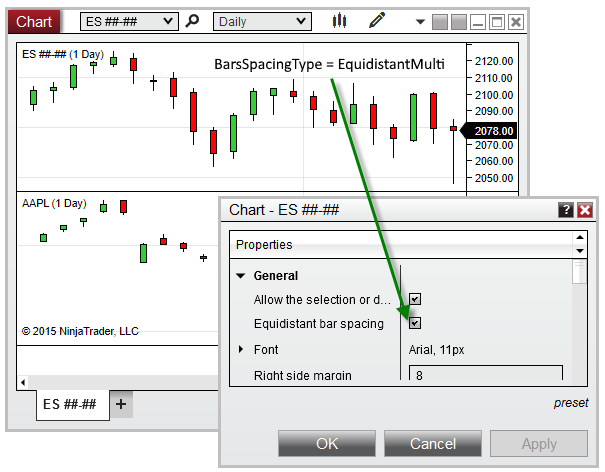

|
<< Click to Display Table of Contents >> BarSpacingType |


|
BarSpacingType
|
<< Click to Display Table of Contents >> BarSpacingType |
|
Indicates the type of bar spacing used for the primary Bars object on the chart.
An enum representing one of the values below:
EquidistantSingle |
Indicates Equidistant Bar Spacing is used, and only one Bars object exists on the chart |
EquidistantMulti |
Indicates Equidistant Bar Spacing is used, and more than one Bars objects exist on the chart |
TimeBased |
Indicates Time-Based bar spacing is used |
<ChartControl>.BarSpacingType
protected override void OnRender(ChartControl chartControl, ChartScale chartScale) |
Based on the image below, BarSpacingType confirms that there are multiple Bars objects configured on the chart, and that the chart is set to Equidistant Bar Spacing:
